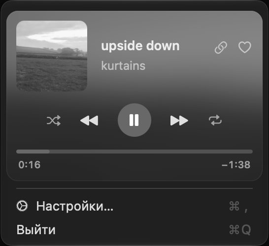

relocpe
work
- Nimbusc, swift / 0 stars / upd 2026-10-23 / forkmacOS menu-bar front end for zapret: bypasses Discord and YouTube blocking without the terminal. Strategy tester and editable domain lists, for macOS 14+.

Ya.Music-RPCswift, shell / 0 stars / upd 2026-10-23Shows the current Yandex Music desktop track in Discord Rich Presence and adds a mini player to the macOS menu bar. For Apple Silicon Macs.
stack: swift / swiftui / appkit / c / shell / javascript / three.js / glsl / github actions